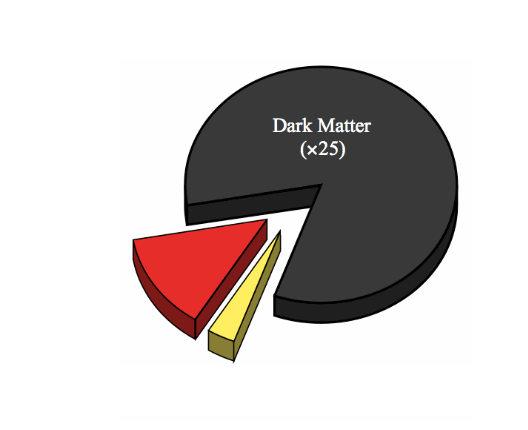
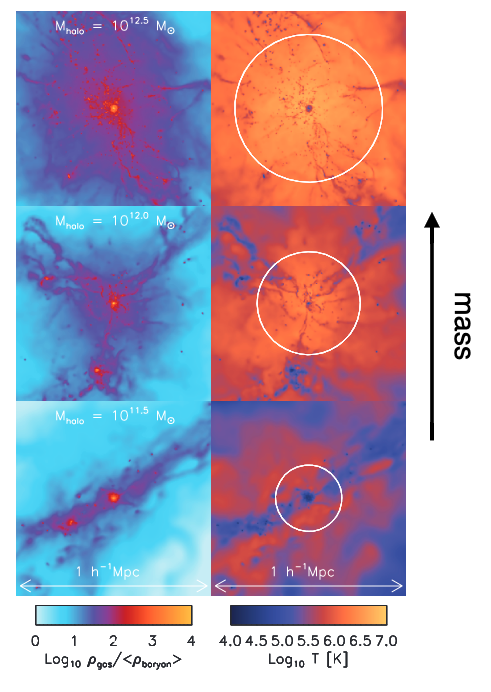

Clusters and Groups of Galaxies
Contents
10. Clusters and Groups of Galaxies¶
10.1. Properties of Clusters¶
Largest virialized structures in the Universe
Richness criterion: at least 50 members with apparent magnitude \(m < m_3 +2\) (with \(m_3\) the magnitude of the third brightest cluster member)
Richness = # of galaxies between \(m_3\) and \(m_3 + 2\)
Compactness criterion: only members with distances < 1.5 \(h^{-1}\) Mpc
Typical sizes: 1-3 Mpc
{kind=link}
{kind=link}
The richest clusters are typically found at intersections of filaments in the Cosmic Web
Roughly \(1-2\) % of galaxies are in rich clusters
Up to 10% are in clusters at al
The majority of galaxies are in “groups”
10.2. Ingredients of a Cluster¶
{kind=link}
Galaxies
\(\sim 100\) large galaxies, \(> 10^{3}\) total galaxies
Typical speeds of \(1000\) km/s
Intra-cluster Stars
Very faint, but comprises of \(10-50\)% of the total cluster light
Hot gas
Hydrostatic atmosphere of clusters
\(T\sim 10^{7-8}\) K → very hot x-ray emitters
\(M_{gas} \sim 5 \times M_{gal}\) with \(Z \sim 0.3 Z_{sol}\)
Dark matter
Absolutely dominates the total mass
10.3. Identification of Clusters¶
Fingers of God: In redshift space, large peculiar velocities make clusters appear as elongated stuctures
Quiescent galaxies in clusters have roughly the same colors (same redshift and roughly the same age), so if we see a ton of red galaxies in the same color, they’re likely in a cluster
At high \(z\), we cannot use the red sequence method since galaxies are still forming stars and spectroscopic redshifts are difficult to obtain
Instead we use intermediate band filters to measure more accurate photometric redshifts (basically photo-z from SEDs)
10.4. Relevant Physical Proceses in Clusters¶
Tidal stripping happens when the tidal forces from a neighboring object overcomes the gravitational force holding the object together
Galaxy harassment refers to the accumulated effect of multiple gravitational interactions, both galaxy-galaxy and galaxy-cluster
Ram pressure stripping by hot cluster gas, removes cold gas from galaxies
Major mergers are less common in galaxy clusters because of the large velocity dispersions \(\sigma \sim 1000\) km/s
10.5. Cluster Galaxy Population¶
There’s typically a radial gradient in galaxy type, with more early type galaxies at the center and spirals/irregulars in the outskirts
Butcher-Oemler Effect: Fraction of blue galaxies in clusters increases with redshift
Fraction of spirals, star formation increases with redshift,
Galaxy populatios evolve rapidly in clusters, primarily due to environmental effects
{kind=link}
10.5.1. Brightest Cluster Galaxies¶
Brightest galaxies in cluster, with essentially zero velocity relative to the cluster mean
\(\sim 10L_\star\) galaxies, 50-100 kpc in scale
Also called cD galaxies, extended haloes of stars, many of which are radio galaxies
Multiple nuclei are often observed, and they’re quite successful at eating their neighbors
They do not follow the luminosity function of galaxies
They also have lower velocity dispersions for their magnitude/mass than you’d predict from Faber-Jackson relation
10.6. Hot Gas in Clusters¶
{kind=link}
Cluster halos retain a hot, gaseous atmosphere
They’re the most luminous, extended X-ray sources, with \(L_x \sim 10^{43}\) to \(10^{46}\) ergs/s
Gas is really hot, \(T\sim 10^{7}\) to \(10^{8}\) K, likely heated by infall into the deep halo potential
Gas radiates in X-rays via free-free radiation (thermal bremsstrahlung) – basically electrons are accelerated in the electric field of other particles and radiate
Gas masses that range from \(M_{gas} \sim M_{stars}\) to \(M_{gas} \sim 7 M_{stars}\) (more massive clusters have higher gas fractions)
Gas Accretion
Some gas falling into dark matter halo shocks to the virial temperature and reaches (quasi-) hydrostatic equilibrium (hot accretion)
The rest of the gas falls in along cold streams (cold accretion)
Hot accretion is more dominant in massive halos and at low redshift